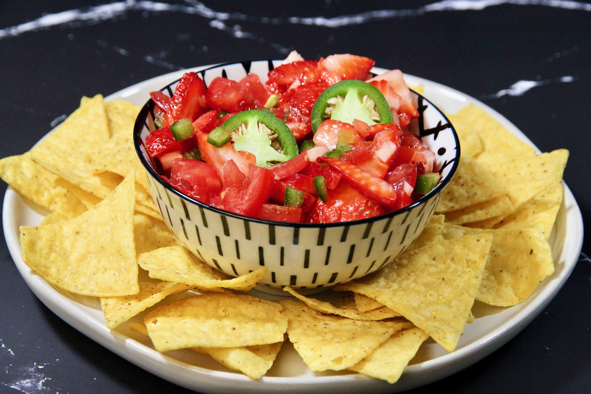

Strawberry Salsa

Description:
A sweet salsa that is great with pork and chicken dishes.
Ingredients:
- 1 pin fresh strawberries,sliced
- 4 roma(plum) tomatoes, seeded and chopped
- 1 jalapeno peppers, seeded and minced
- 2 cloves garlic, minced
- 1 lime, juiced
- 1 tablespoon olive oil
Steps:
- In a large bowl, combine strawberries, tomatoes, chile peppers, garlic, lime juice and oil.
- Toss all together to mix and coat.
- Cover dish and refrigerate for 2 hours to chill.
- Ready to serve!